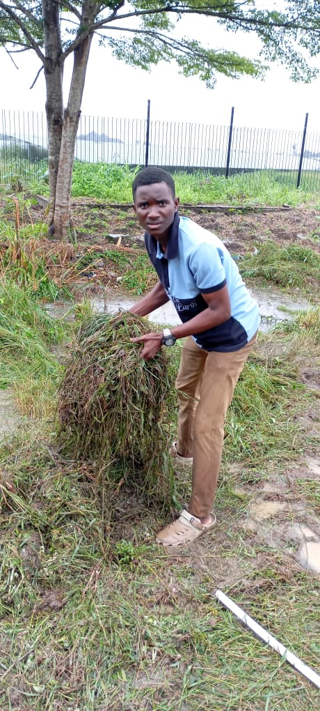

Ethical Hacking
Finding weaknesses in systems and networks before malicious actors do.
Hello, I'm
Cybersecurity Professional /
I secure networks, systems and devices by thinking like an attacker and building like a defender. Currently studying Cybersecurity at the University of Port Harcourt.
I'm an ethical hacker based in Port Harcourt, Nigeria. I'm passionate about protecting networks, systems and devices in cyberspace, and about understanding how attackers think so I can help stop them.
When I'm not securing networks, I enjoy watching and reading educational content related to my career, because staying curious is the only way to stay ahead in this field.
Finding weaknesses in systems and networks before malicious actors do.
Protecting networks and devices through monitoring, hardening and defense.
Investigating digital evidence to understand how security incidents happen.
Identifying, assessing and reducing security risks to an organisation.
Securing large-scale data environments and the pipelines that feed them.
Exploring security challenges in connected devices and emerging technology.

Completed during my 200 level at the University of Port Harcourt as part of my community service.
View ProjectNew projects and write-ups are on the way. Follow my GitHub to see what I'm building next.
Visit GitHubHave a project in mind or just want to say hello? Fill out the form below or reach me directly on social media.